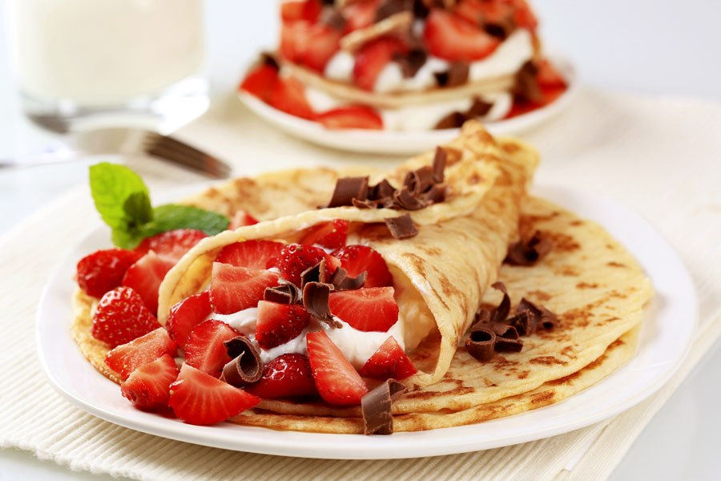
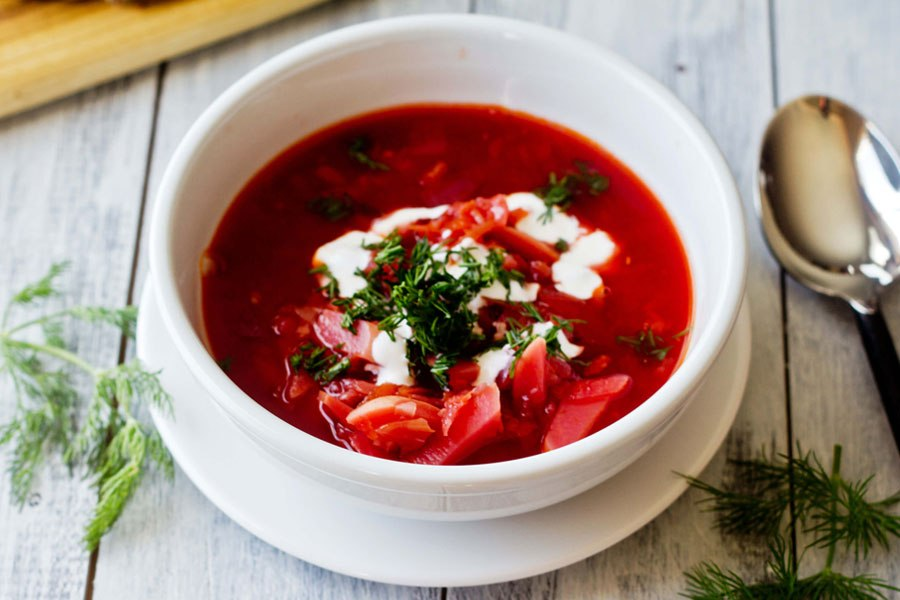
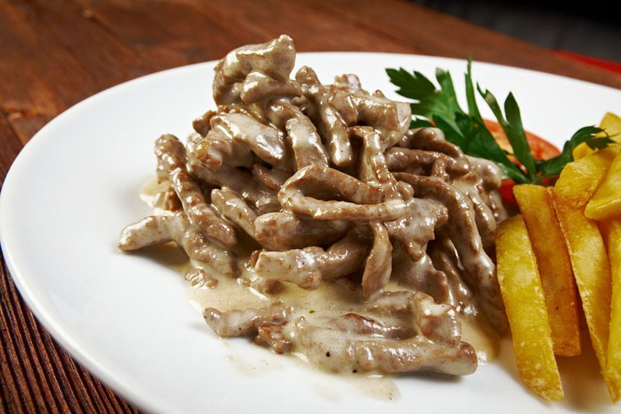
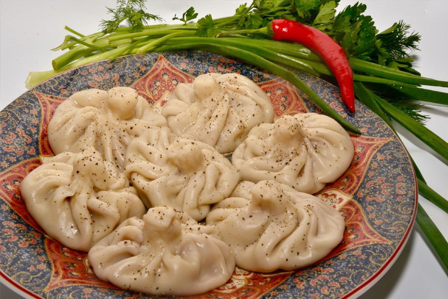
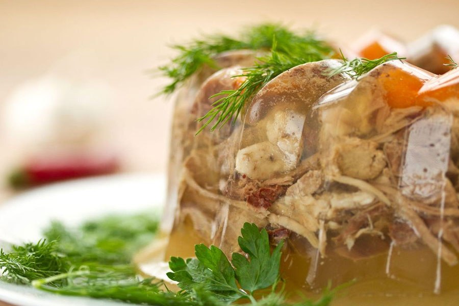
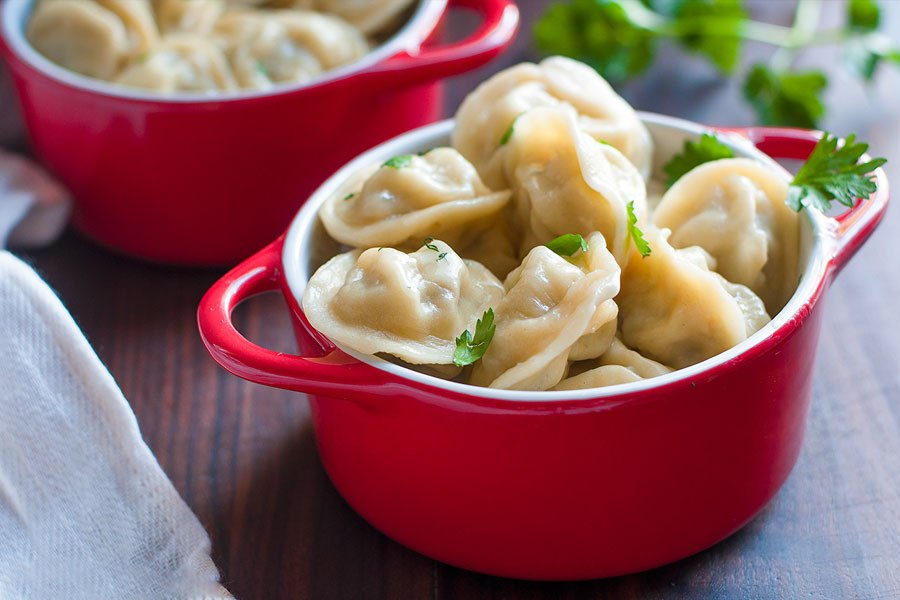
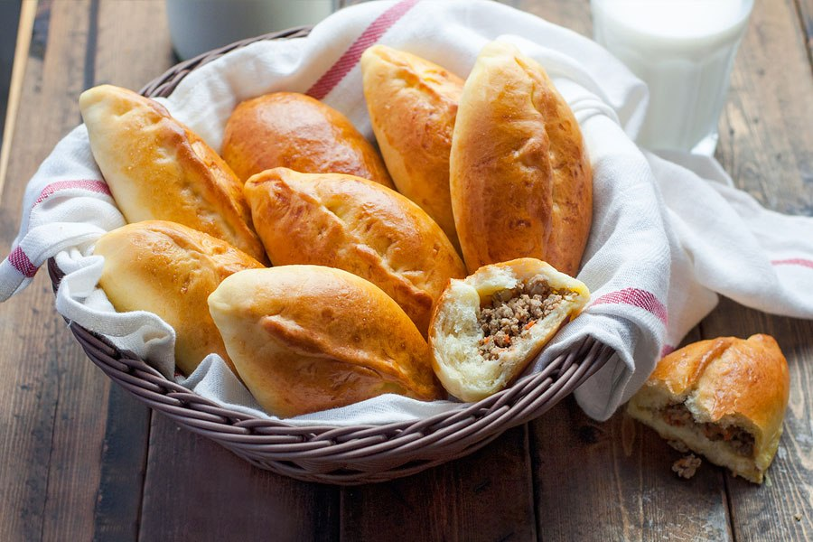
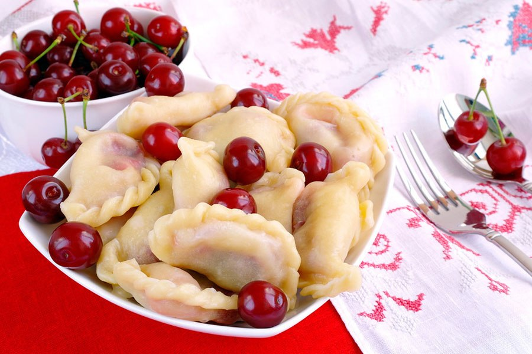
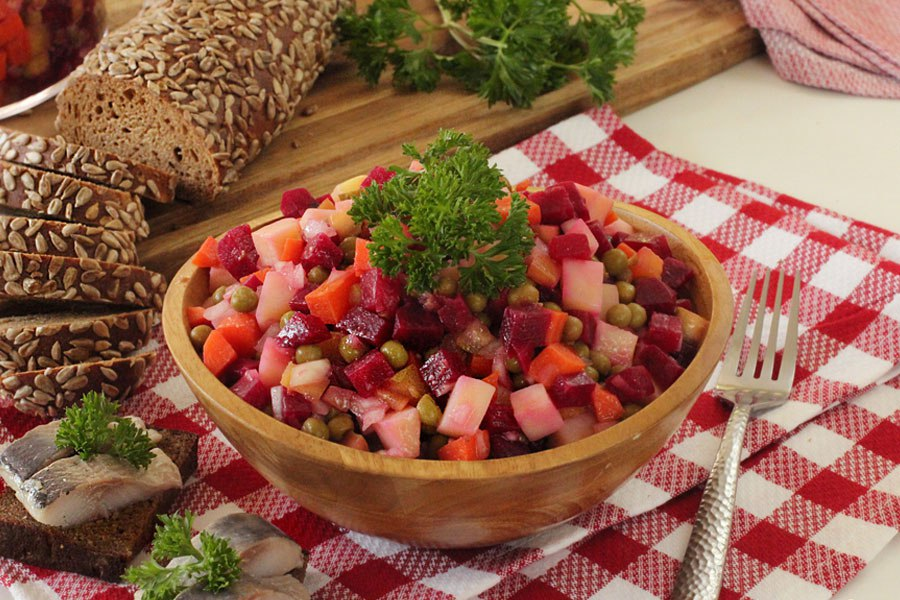

|  | Bliní |
Blini é uma espécie de panquecas tradicionais da Rússia, feitos com massa lêveda de farinha de trigo branco ou trigo mourisco, aveia, cevada ou centeio, com leite, ovos e nata. Os brasileiros chamam este prato de panqueca, os franceses de crepes, os poloneses de naleśniki, os ucranianos de налисники (nalêsnêkê) e os russos de блины (blinê). A palavra блин (blin) em idioma antigo-eslavo era млинъ (mlin) e originalmente significava uma refeição de farinha. Na linguagem ucraniana, por exemplo, a palavra млин (mlên) significa “moinho”.
Ver receita |
|  | Borscht |
O borsch é uma sopa tradicional em diversos países do Leste Europeu como a Ucrânia, Polônia, Rússia, Romênia, entre outros. A sopa é normalmente preparada com beterraba que lhe dá um forte coloração vermelha. Outros ingredientes costumeiros são o repolho, cenoura, pepino, batata, cebola, tomate, cogumelo e carne, vinagre (alternativamente, algumas receitas indicam limão), às vezes feijão.
Ver receita |
|  | Estrogonofe |
Estrogonofe (do russo строганов, stroganov) é um prato originário da culinária russa composto de cubos de carne bovina servidos num molho de creme de leite. O estrogonofe é bastante popular no Brasil, onde tem muitas variações como o uso de carne de frango ou camarões. A principal característica do estrogonofe brasileiro é o uso de molho de tomate misturado com o creme de leite. Além disso, é quase sempre servido com uma porção de arroz (branco ou à grega) e batata palha, enquanto que na Rússia era geralmente servido com batatas cozidas.
Ver receita |
|  | Khinkali |
Khinkali são pasteis de massa cozidos, especialmente consumidos em restaurantes chamados “sachinkle”, normalmente com uma cerveja. A forma de comer os khinkali também tem algumas variantes: uma fonte indica que se devem abrir os pasteis e consumir apenas o recheio; outra diz que se deve arrancar o “botão” de fecho com os dentes e apreciar o molho que está dentro; os botões são guardados na beira do prato, para que cada comensal conheça o seu apetite. Este botão tem nomes tradicionais em georgiano: “kudi” (ქუდი), ou “chapéu”, ou ainda “kuchi” (კუჭი), ou “umbigo”.
Ver receita |
|  | Kholodets |
Kholodets é um prato em que os ingredientes são colocados em uma gelatina feita a partir de um caldo de carne ou consommé, geralmente feitos com misturas comerciais de gelatina sem caldo, costumam ser chamados de saladas de gelatina. Quase todas as carnes, aves ou peixes podem ser usados para fazer gelatina.
Ver receita |

| Pastilá |
Na Rússia, a pastilá surgiu no século 14 e era produzida com mel e maçãs azedas. Acredita-se que a melhor pastilá era feita em Kolomenskaia, a sudeste de Moscou. Sua receita foi mantida em segredo até o século 19, quando os franceses adicionaram clara em neve ao purê de maçã e obtiveram um novo doce conhecido como marshmallow francês. Nesse mesmo século, os confeiteiros russos substituíram o mel por açúcar e, desde então, o doce passou a ser preparado dessa forma em todo o território russo.
Ver receita |
|  | Pelmeni |
O Pelmeni consiste num recheio de carne picada, envolvido por uma massa fina, feita de farinha e ovos, com leite ou água, resultando em pequenos pastéis com cerca de 2-3 cm de diâmetro e forma mais ou menos esférica. A carne pode ser de porco, ovelha, vaca ou qualquer outro tipo, podendo ser usada uma mistura de várias carnes. A receita tradicional dos Urais exige 55% de bovino e 45% de porco para o recheio. Com frequência, são adicionadas especiarias, tais como a pimenta, e cebolas ao recheio.
Ver receita |
|  | Pirozhki |
Pirozhki são pãezinhos, assados no forno ou cozidos, recheados com carne, vegetais, ou outros ingredientes, originários da Rússia. Ver receita |
|  | Vareniki |
A massa é geralmente preparada a partir de farinha de trigo, ovos e leite ou água. Mas a receita pode ser bastante simples e incluir apenas farinha, água e sal. Mesma receita de massa pode encontrar no artigo sobre pelmeni. Por isso esse prato serve muito bem para vegetarianos e veganos. Variedades de recheio para vareniki podem ser diferentes, e tanto salgados quanto doces. Se o recheio é de frutas, pode ser adicionado um pouco de açúcar à massa. Ver receita |
|  | Vinegret |
É uma das saladas russas mais famosas. Ela é feita com beterraba, batata, cenoura, picles e ervilha. É bem leve e saudável. Apesar da popularidade generalizada na Rússia e na Ucrânia, as receitas básicas de saladas mistas foram adotadas nas cozinhas da Europa Ocidental no final do século XIX. Originalmente, o termo vinegret denotava qualquer mistura de vegetais cozidos em cubos com vinagre.
Ver receita |